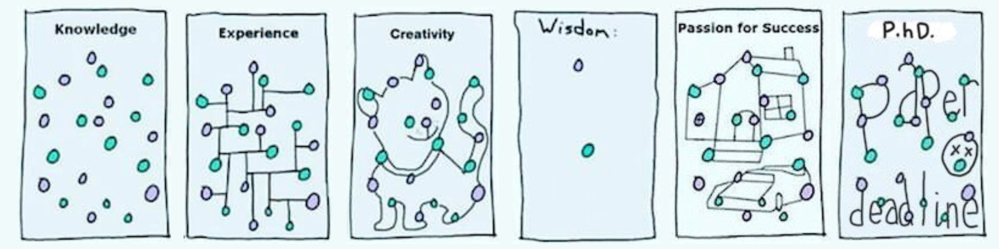

Hello World! My name is Caitao Zhan, a Postdoc at the Data Science and Learning Division at Argonne National Lab supervised by Raj Kettimuthu. I now work on quantum networking/computing/sensing. Previously, I was a Ph.D. candidate at the
WINGS lab,
Computer Science Department, Stony Brook University,
advised by Prof. Himanshu Gupta.
Here is my Google Scholar profile, and here is my ResearchGate profile. My contact is czhan[AT]anl.gov.
My Resume. My citation map.
During my Ph.D., my research is in both classical computing and quantum computing. 1) For the classical part, I do wireless networks (spectrum sensing and transmitter localization) and datacenter networks.
I apply various machine learning and deep learning techniques to the computer networks field to improve performance.
2) For the quantum part, I do quantum communication networks, and quantum sensor networks.
Quantum will bring revolutionary changes and innovations to the computing field in the future.
News:
- Sep. 2025: Attended IEEE QCE 2025 at Albuquerque, New Mexico. Presented our paper on quantum transduction and received a Best Paper Award (QNET track)!
- Jul. 2025: One paper accepted at IEEE QCE 2025! I will also be co-organizing a SeQUeNCe tutorial and workshop (QNSim 2025) at IEEE QCE!
- Mar. 2025: One paper accepted at IEEE Transactions on Quantum Engineering!
- Jan. 2025: One paper accepted at IEEE ICC 2025, and one paper accepted at QCNC 2025!
- Nov. 2024: Won the Outstanding Poster Presentation award during the Argonne Postdoctoral Research and Career Symposium
- Sep. 2024: Attended IEEE QCE 2024 remotely, co-organized The Workshop on Quantum Network Simulations
- Mar. 2024: One paper accepted at ACM Transactions on Quantum Computing!
- Feb. 2024: Joined Argonne National Lab as a Postdoc and continue research on quantum networks!
- Jan. 2024: Successfully defended PhD! PPT Slides, Thesis GitHub Repository
- Jan. 2024: One paper accepted at IEEE ACCESS!
- Nov. 2023: Attended Inaugural Conference - Center for Distributed Quantum Processing at Stony Brook University and Quantum Computing and Networks Workshop hosted by my advisor Himanshu
- Sep 2023: Attended SIGCOMM's 1st QuNet Workshop in New York, NY; Presented my paper on Quantum Sensor Network at IEEE QCE 2023 in Bellevue, WA
- July 2023: One paper accepted at IEEE QCE 2023!
- May 2023: Attended a Quantum Networks workshop at CUNY ITS hosted by Prof. Mark Hillery. Some photos at the workshop.
- Jan. 2023: One paper accepted at Physical Review A!
- Oct. 2022: Did thesis proposal and won the Best Poster Award (Participants Choice) during the Graduate Research Day of CS Department, Stony Brook University.
- Sep. 2022: Attended QCE 2022 in-person in Broomfield, Colorado! Here is my vlog at the conference.
- Jun. 2022: Attended Quantum Resource Estimation workshop and SupermarQ tutorial (co-locate with ISCA 2022) in NYC! First in-person conference after around ten online conferences!
- Apr. 2022: One paper accepted at IEEE Transactions on Quantum Engineering!
- Mar. 2022: One paper accepted at Elsevier Pervasive and Mobile Computing! The extended journal version of the WoWMoM paper.
- July 2021: One paper accepted at IEEE/ACM Transactions on Networking! The extended journal version of the INFOCOM paper.
- May 2021: I am starting a software engineering intern at Microsoft Azure remotely.
- Mar. 2021: One paper accepted at IEEE WoWMoM 2021! Hello
Pisa, Italyonline conference :( - Oct. 2020: One paper accepted at ACM CoNEXT 2020! Hello
Barcelona, Spainonline conference :( - Aug. 2020: I am being on the panelist of the 2020 SBU CS PhD Panel. Here is a cool video of a virtual tour of SBU CS department made for the panel.
- Jan. 2020: One paper accepted at ACM/IEEE IPSN 2020! Hello
Sydney, Australiaonline conference :( - Dec. 2019: Passed Candidacy exam. Now I am a PhD Candidate!
- Dec. 2019: One paper accepted at IEEE INFOCOM 2020! Hello
Beijing, China,Toronto, Canada!online conference :( - Nov. 2019: Attended SenSys 2019 at NYC.
- Nov. 2018: Received IMC 2018 travel grant and attended IMC 2018 at Boston.
- Jun. 2018: Joined WINGS lab.
- Aug. 2017: Joined Stony Brook University CS PhD program.
Preprint:
Joaquin Chung, Daniel Dilley, Ely Eastman, Alvin Gonzales, Kara Hokenstad, Md Shariful Islam, Varun Jorapur, Joseph Petrullo, Andy CY Li, Bikun Li, Vasileios Niaouris, Anirudh Ramesh, Ansh Singal, Caitao Zhan, et al., ``InterQnet: A Heterogeneous Full-Stack Approach to Co-designing Scalable Quantum Networks'', 2025, arXiv
Publications:
Laura d'Avossa, Caitao Zhan, Joaquin Chung, Rajkumar Kettimuthu, Angela Sara Cacciapuoti, Marcello Caleffi, Simulation of Quantum Transduction Strategies for Quantum Networks, IEEE QCE 2025, PDF
Xiaojie Fan, Caitao Zhan, Himanshu Gupta, CR Ramakrishnan, Optimized Distribution of Entanglement Graph States in Quantum Networks, IEEE Transactions on Quantum Engineering 2025, arXiv
Caitao Zhan, Joaquin Chung, Allen Zang, Alexander Kolar, Rajkumar Kettimuthu, Design and Simulation of the Adaptive Continuous Entanglement Generation Protocol, QCNC 2025, arXiv
Francesco Mazza, Caitao Zhan, Joaquin Chung, Rajkumar Kettimuthu, Marcello Caleffi, Angela Sara Cacciapuoti, Simulation of Entanglement-Enabled Connectivity in QLANs using SeQUeNCe, IEEE ICC 2025, arXiv,
Caitao Zhan, Himanshu Gupta, Mark Hillery, Optimizing Initial State of Detector Sensors in Quantum Sensor Networks, ACM Transactions on Quantum Computing 2024, PDF, arXiv
Mohammad Ghaderibaneh, Caitao Zhan, Himanshu Gupta, DeepAlloc: Deep learning Approach to Spectrum Allocation in Shared Spectrum Systems, IEEE Access 2024, PDF, arXiv
Caitao Zhan, Himanshu gupta, Quantum Sensor Network Algorithms for Transmitter Localization, IEEE QCE 2023, PDF, arXiv, Presentation
Mark Hillery, Himanshu Gupta, Caitao Zhan, Discrete Outcome Quantum Sensor Networks, Physical Review A (PRA) 2023, PDF, arXiv, Presentation, BibTex
Mohammad Ghaderibaneh, Caitao Zhan, Himanshu Gupta, CR Ramakrishnan, Efficient Quantum Network Communication using Optimized Entanglement-Swapping Trees, IEEE Transactions on Quantum Engineering 2022, PDF, arXiv, BibTex
Caitao Zhan, Mohammad Ghaderibaneh, Pranjal Sahu, Himanshu Gupta, DeepMTL Pro: Deep Learning Based Multiple Transmitter Localization and Power Estimation, Elsevier Pervasive and Mobile Computing 2022, PDF, arXiv, Presentation, BibTex
Arani Bhattacharya, Caitao Zhan, Abhishek Maji, Himanshu Gupta, Samir R. Das, Petar M. Djuric, Selection of Sensors for Efficient Transmitter Localization, IEEE/ACM Transactions on Networking 2021. PDF
Caitao Zhan, Mohammad Ghaderibane, Pranjal Sahu, Himanshu Gupta. DeepMTL: Deep Learning Based Multiple Transmitter Localization, IEEE WoWMoM 2021. PDF, Presentation BibTex
Himanshu Gupta, Max Curran, Caitao Zhan. Near-Optimal Multihop Scheduling in General Circuit-Switched Networks, ACM CoNEXT 2020. PDF, Presentation
Caitao Zhan, Himanshu Gupta, Arani Bhattacharya, Mohammad Ghaderibaneh. Efficient Localization of Multiple Intruders for Shared Spectrum System, ACM/IEEE IPSN 2020. PDF, Presentation, BibTeX
Arani Bhattacharya, Caitao Zhan, Himanshu Gupta, Samir R. Das, Petar M. Djuric. Selection of Sensors for Efficient Transmitter Localization, IEEE INFOCOM 2020. PDF, Presentation
Caitao Zhan, Changhe Li. Shape Formation in Games: A Probability-Based Evolutionary Approach, CIS 2016. PDF
Academic Services:
Co-chair of Argonne Postdoctoral Research and Career Symposium (PRCS 2025)Program Committee of QCE 2024, QNSim 2024, QCNC 2025, HAIQ 2025, QCE 2025, QNSim 2025, QCNC 2026
Artifact Evaluation Committee of ACM MobiCom 2023
Shadow Program Committee of ACM SenSys 2022
Reviewer of journals: Elsevier The Journal of Networks and Computer Applications, Elsevier Pervasive and Mobile Computing, IEEE/ACM Transactions on Networking, IEEE Internet of Things Journal, IEEE Open Journal of the Communications, IEEE Transactions on Communications, ACM Transactions on Quantum Computing, Springer Nature npj Quantum Information
Reviewer of conferences: ISIT 2025, EURO-PAR 2025
Miscellaneous:
My YouTube Channel. I am a vlogger since Dec. 2019. My Bilibili.My GitHub. Where I host my projects.
My LinkedIn. More about my experience.
Advising Students for Success by Jeffrey Ullman. My advisor's advisor Jeffrey Ullman won the 2020 Turing award for the contributions to compilers. I asked my advisor what impact Jeff has on you and he sent me this article.
